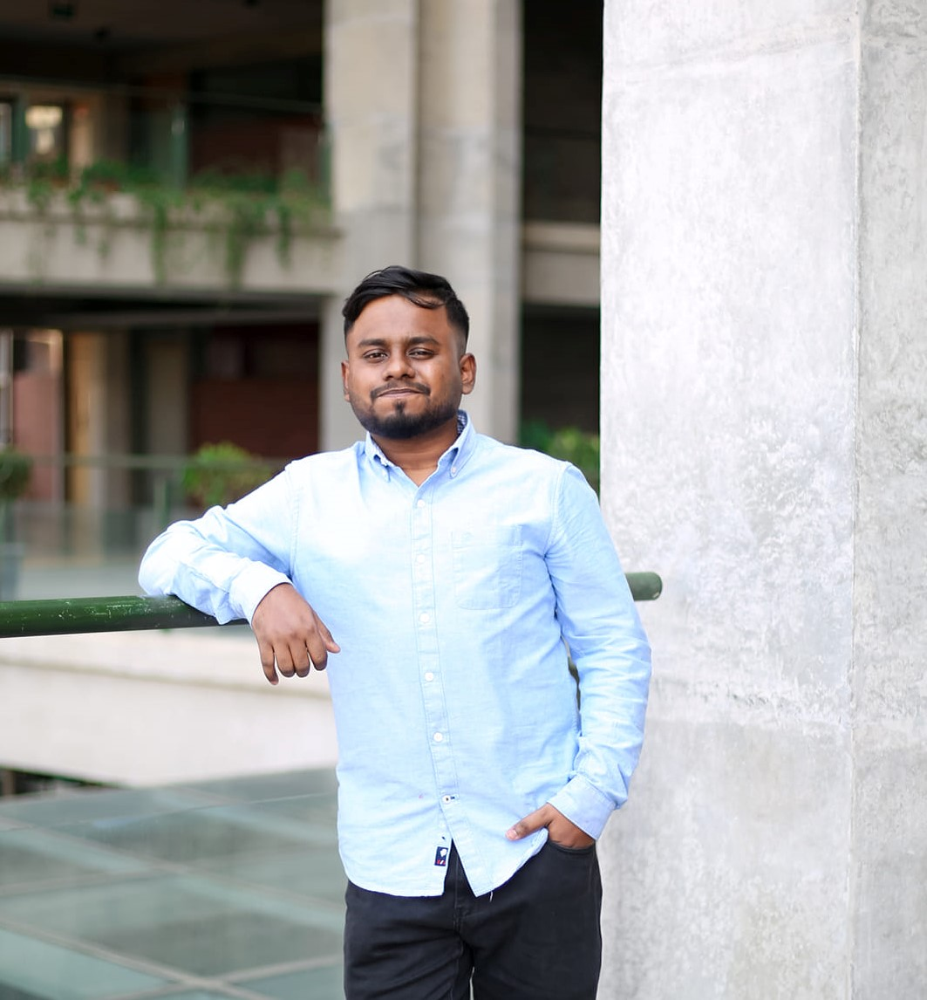

ICCV 2025 Workshop
Tri-modal Adversarial Attacks on Short Videos
Introducing SVMA and ChimeraBreak to challenge MLLMs in content moderation.
Read PaperHello, I'm
CS Researcher | Developer | ML Enthusiast

As a computer science student, I am passionate about machine learning and artificial intelligence. With a desire to create technology that improves people's lives, I am guided by empathy and the mentality of being the support I once needed. My goal is to develop innovations that truly make a positive impact by addressing unmet needs and helping others in meaningful ways.
Computer Vision, Multimodal Learning, Adversarial Machine Learning, AI Safety
I am committed to enhancing student learning by incorporating real-life scenarios into my teaching. My passion for knowledge sharing and strong background in education drive me to create engaging and practical learning experiences.
Courses Conducted: Introduction to Computer Systems, Discrete Mathematics, Structured Programming Language, Structured Programming Language Lab, Object Oriented Programming Lab, Data Structures and Algorithms I Lab, Data Structures and Algorithms II Lab, Microprocessors and Microcontrollers Laboratory, Artificial Intelligence Lab, Software Engineering Lab.
As an undergraduate assistant, I played a key role in taking classes, course preparation, and creating assignments, quizzes, and exams. I bridged the gap between students and faculty by relaying feedback and addressing concerns.
Course supervised: Structured Programming Language Laboratory, Data Structures and Algorithms I Laboratory, Digital Logic Design Laboratory, Microprocessors and Microcontrollers Laboratory, and Electronics Laboratory.
Introducing SVMA and ChimeraBreak to challenge MLLMs in content moderation.
Read PaperA novel dataset and classifier for identifying anti-Muslim hate in memes.
Read Paper

Fusing audio and visual inputs to classify human emotions with state-of-the-art results.
Under 2nd RevisionHere are some projects I worked on throughout my undergraduate studies. Each project allowed me to apply my learning and hone my skills.

AI & IoT based elderly care system streamlining caregiving processes.

Desktop application for managing university co-curricular activities.

Platform connecting young people with diverse opportunities worldwide.
International Blockchain Olympiad (IBCOL) 2023
Harvard Health Systems Innovation Lab Hackathon 2025 (Dhaka Hub)
Bhashamul: Bengali Regional Text to IPA National NLP Datathon
Blockchain Olympiad Bangladesh 2023
Hult Prize Boston Summit - 2024
Hult Prize On-Campus Round (UIU)
CSE Project Show-Sum'23 (UIU)
CSE Project Show-Fall'21 (UIU)
CSE Project Show-Sum'22 (UIU)
For 12 consecutive trimesters (UIU)
I'm currently looking for new opportunities. Whether you have a question or just want to say hi, I'll try my best to get back to you!
sahidhossainmustakim@gmail.com